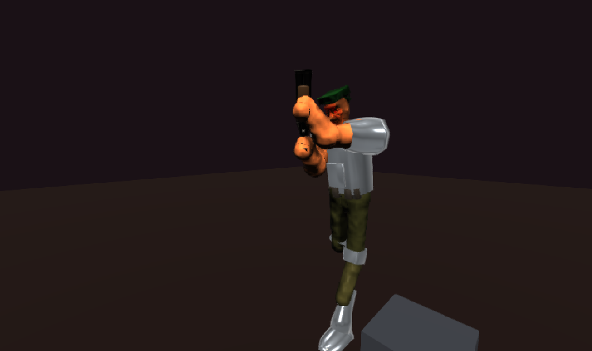
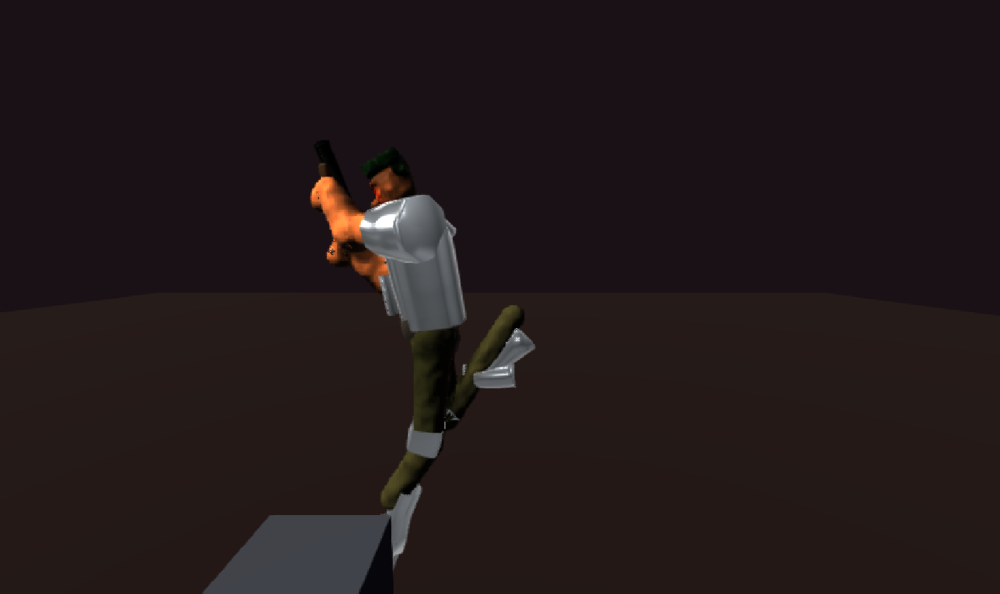
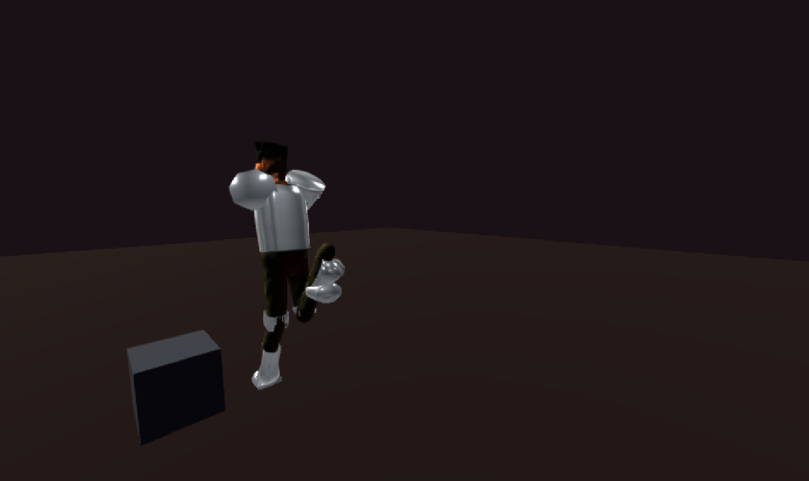
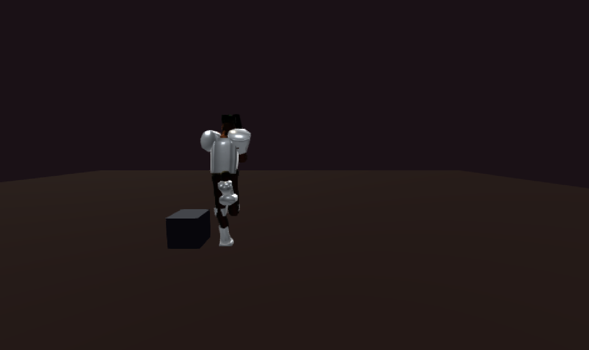
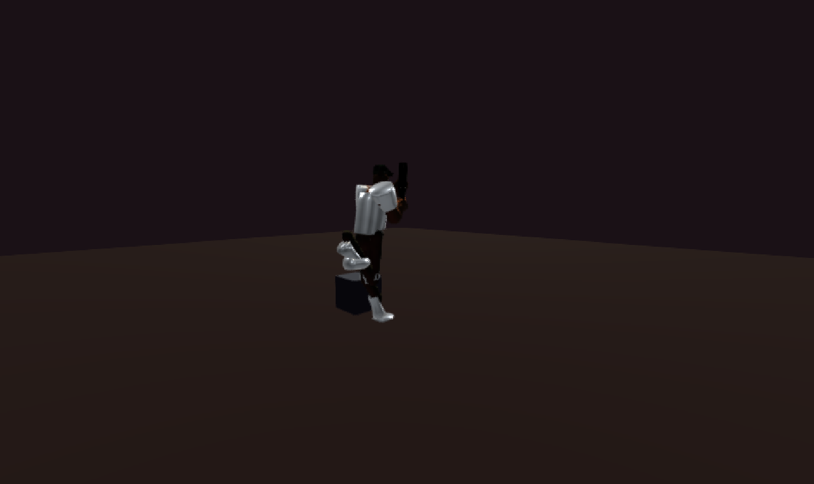
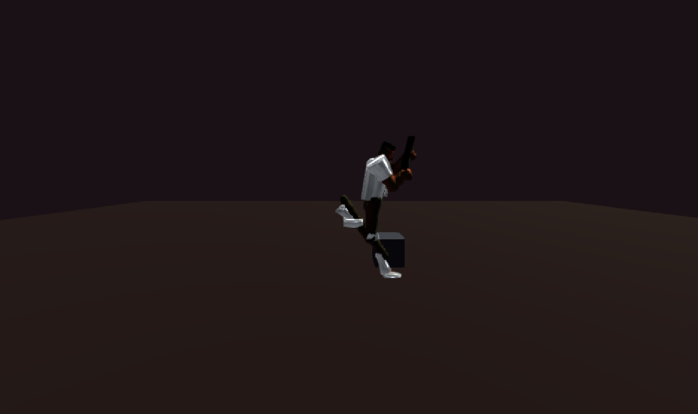
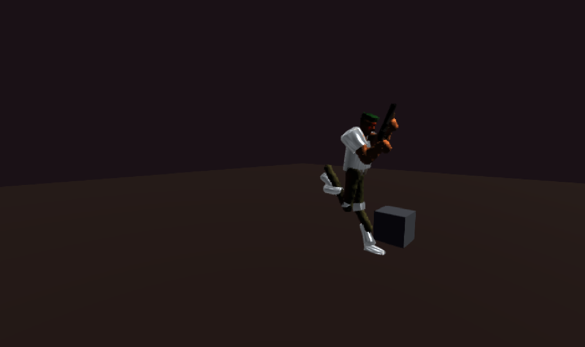

blob-turntable — 8 frames
backend=webgpu pitch=0.12 dist=2.4
yaw 0° · std 13.33

yaw 45° · std 18.72

yaw 90° · std 16.2

yaw 135° · std 13.02

yaw 180° · std 10.87

yaw 225° · std 8.88

yaw 270° · std 8.42

yaw 315° · std 9.46